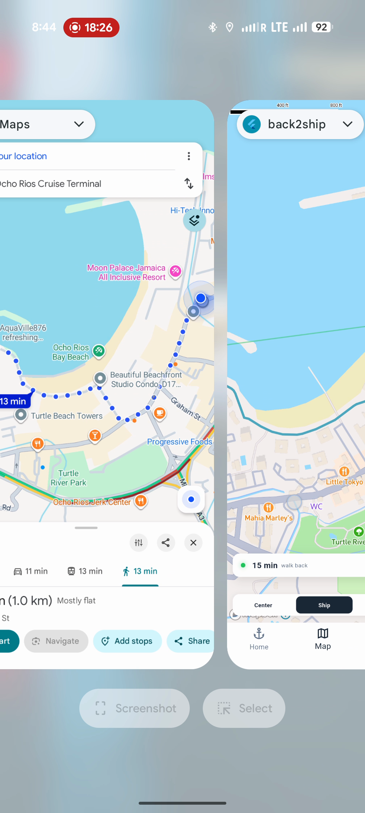
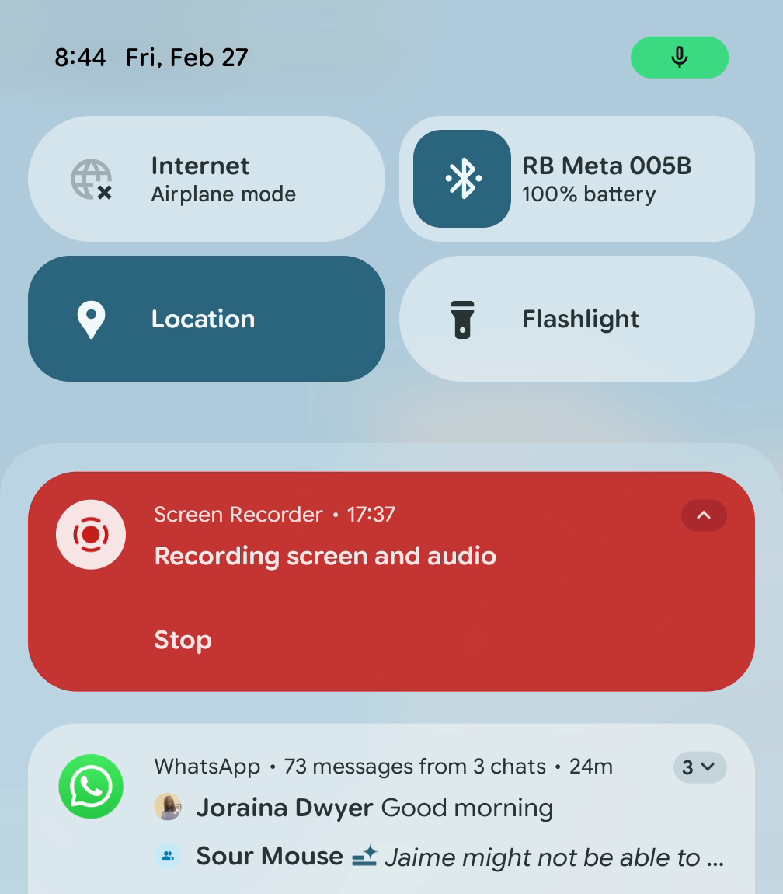
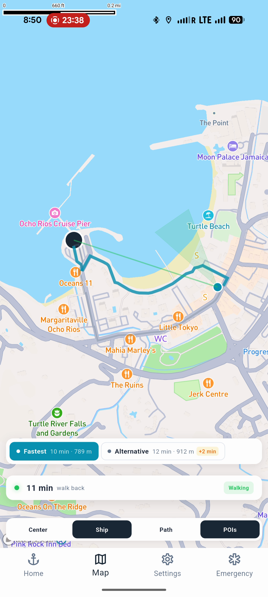
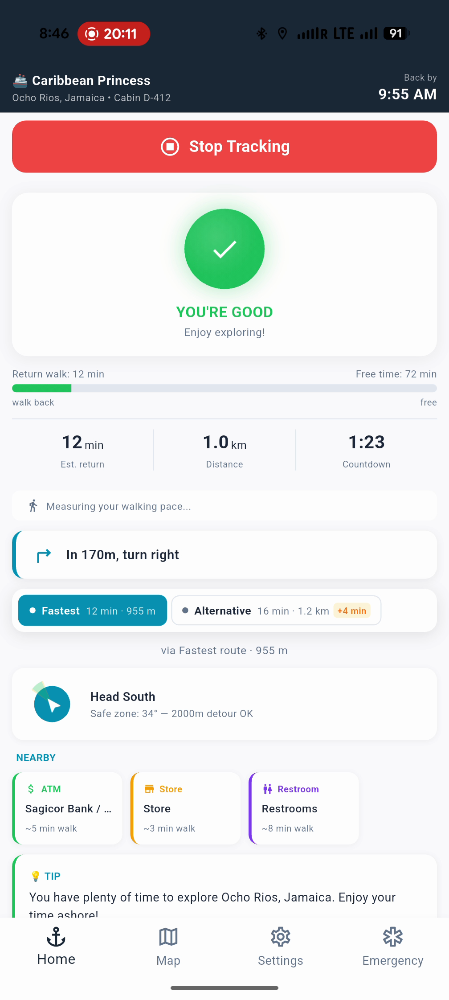
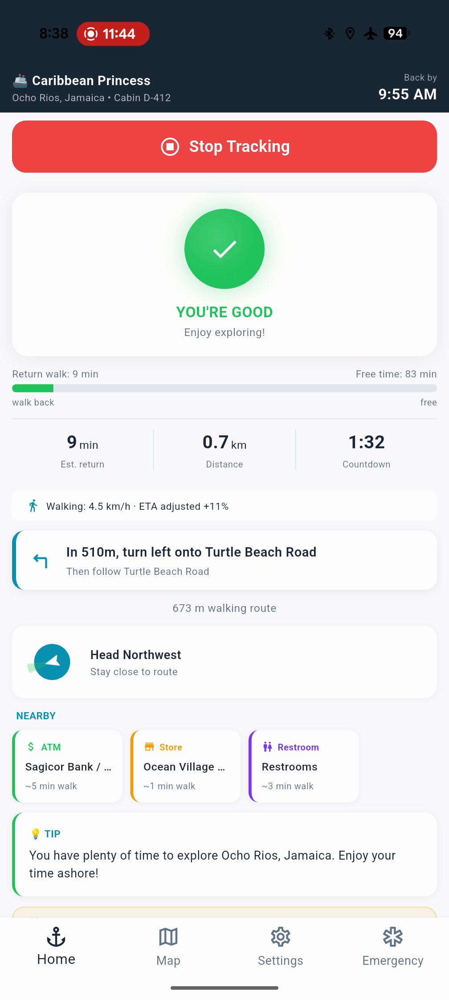
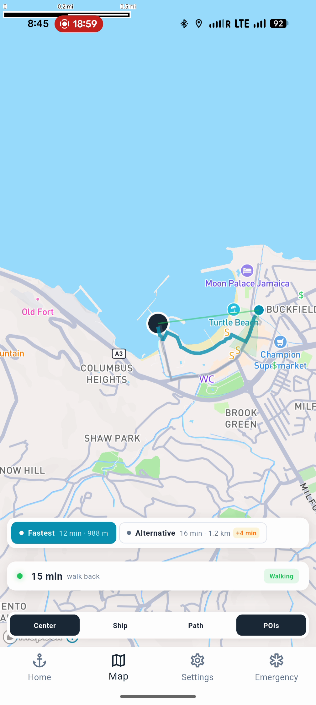
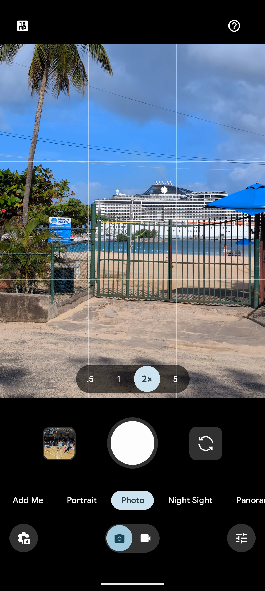
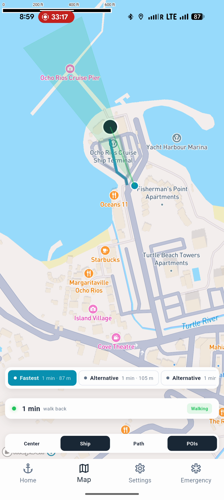

ShipSafe SDK gives your passenger app the intelligence to bring every guest back to the ship on time — and to every excursion meeting point along the way. Offline, accurate, automatic.
Every delayed departure triggers a cascade of costs — and the problem is growing as cruise lines expand into more ports with longer shore excursion windows.
Fuel surcharges, port overage fees, and downstream schedule disruptions that compound across your itinerary.
Stranded passengers require emergency coordination, rebooking, and create duty-of-care obligations in foreign ports.
One viral clip of a passenger sprinting down the pier changes the narrative for your entire brand.
Current apps show map pins, not walking ETAs. Passengers have no idea if they can make it back in time.
Average refund request when a passenger misses a booked shore excursion — plus the partner complaint, rebooking cost, and lost upsell opportunity.
A drop-in SDK that turns your existing passenger app into a safety system for departures and excursions — no new app required.
Works in every port, even without cell signal. Passengers always know exactly how long it takes to walk back to the ship.
Gentle reminders that intensify as departure approaches. From a friendly nudge to an urgent alarm — passengers never miss the ship.
Handles GPS drift, urban canyons, and signal loss automatically. Reliable positioning in the real-world conditions ports throw at you.
Drop-in SDK for iOS and Android. Your engineering team integrates once — it runs silently, maintenance-free, voyage after voyage.
Track walking ETAs to excursion meeting points, not just the pier. Passengers get escalating alerts when it's time to leave for their tour — same trusted pipeline, multiple destinations.
Surface the closest ATMs, restrooms, pharmacies, and Wi-Fi hotspots. Passengers feel confident exploring — and spend more time (and money) ashore.
From integration to insights — ShipSafe SDK works behind the scenes so your team can focus on the guest experience.
Add ShipSafe SDK to your existing passenger app. One dependency, minimal code, no new infrastructure required.
The SDK activates automatically when passengers go ashore. It tracks return-to-ship ETAs and walking ETAs to excursion meeting points. Zero configuration per port.
Passengers receive timely, escalating guidance back to the pier and to their excursion meeting points. The right message at the right time — no missed ships, no missed tours.
Post-voyage analytics show passenger return patterns, close calls prevented, and clear ROI metrics for your fleet.
Passengers miss booked excursions because they underestimate walking time. GoTime tells them exactly when to leave — using the same offline routing pipeline that gets them back to the ship.
Track walking ETAs to multiple excursion meeting points simultaneously, alongside the pier. One SDK, every destination.
Progresses from "on track" to "leave soon" to "it's go time" — escalating only when the passenger genuinely needs to start walking.
Pier safety always wins. If a passenger needs to get back to the ship, pier alerts suppress excursion notifications automatically.
Every missed excursion is a refund request, a partner complaint, and a lost upsell opportunity. GoTime protects your ancillary revenue.
Ocho Rios, Jamaica — Live field test, February 2026

The raw fastest route was 12 minutes. ShipSafe measured the tester's walking pace at 4.4 km/h and added a safety buffer — because a conservative estimate that gets passengers back 3 minutes early is infinitely better than an optimistic one that leaves them at the pier.

17 minutes of walking with zero connectivity. GPS works without internet — ShipSafe leverages this to deliver accurate ETAs, turn-by-turn directions, and nearby essentials with no data roaming required.

The tester intentionally missed a turn. The app recalculated a new route in seconds — still in airplane mode. No "cannot find route" errors, no waiting for a server.

ShipSafe measures actual walking speed and adjusts the ETA in real time. A leisurely shopper gets a realistic estimate, not an optimistic one.

Turn-by-turn navigation
Multi-route alternatives
Real-world port context
Full loop completeTransparent pricing that scales with your operation. Volume discounts available for fleets of 10+ ships.
GoTime is exclusive to Navigator Plus. Same price, more value — protecting excursion revenue shouldn't cost extra.